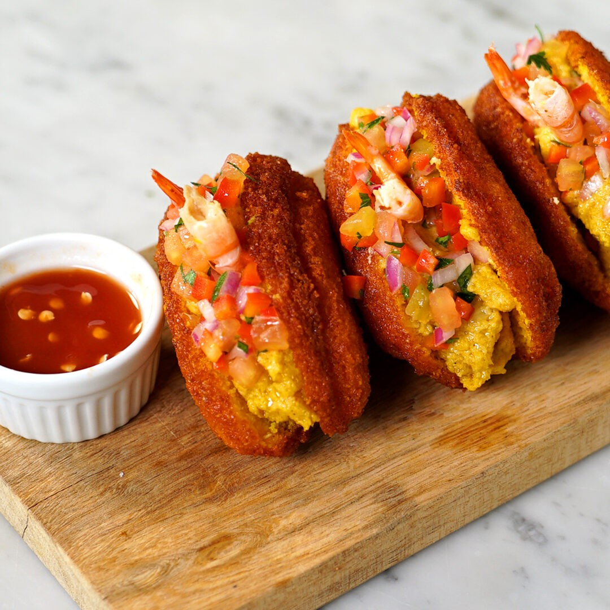

Acarajé

Description
This acarajé with vatapá recipe makes the perfect snack at a Brazil-themed party. The crispy bean and onion cakes (acarajé) are stuffed with a flavourful vatapá - a popular Brazilian mix of shrimp, crab, nuts and coconut milk. Chef Marcello Tully says acarajé is one of his favourite Brazilian street-food snacks, citing their moreishness and aroma as a major attraction.
Ingredients:
- 16 oz of black-eyed beans
- 16 oz of white onion, roughly chopped
- salt
- 12 2/3 oz of dende oil
- 12 2/3 oz of vegetable oil
- 10 2/3 oz of dried shrimp
- 11 2/3 oz of bread, day-old, roughly chopped
- 3 oz of cashew nuts, unsalted
- 3 oz of peanuts, unsalted
- 3/4 oz of dende oil
- 1 medium onion, roughly chopped
- 2 garlic cloves, finely chopped
- 2 tbsp of fresh ginger, roughly chopped
- 1 red chilli, finely chopped
- 2 lb of coconut milk, unsweetened
- 1 tomato, large, roughly chopped
- 1 handful of coriander, roughly chopped
- 8 3/4 oz of crab meat, cooked
- black pepper
Steps:
- First, make the acarajé. Add the beans to a large bowl, cover with water and leave to soak overnight (or for 24 hours)
- While the beans are soaking, gently rub them between your hands, the outer skins should come away and float to the surface. Remove the skins and discard, then drain the water
- Cover the beans with water again, more skins should float up to the surface. Discard and leave the beans to finish soaking
- After soaking, drain the beans and add to a food processor with the raw onions (do this in batches if necessary)
- Scrape the mixture into a large mixing bowl and season with salt. Beat the mixture with a wooden spoon for a few minutes, until light and fluffy
- Heat the dende oil and the vegetable oil in a large, deep pan. Form balls of the batter with a wooden spoon and carefully drop into the hot oil in small batches, cooking for approximately 6 minutes (or 3–4 minutes on each side). They are cooked when they turn a nice bright orange colour and are crisp on the outside
- Once they are cooked, drain and set aside on some kitchen towel
- While the cakes are cooling slightly, make the vatapa filling. Add the shrimp to a food processor, blitz to a pulp then remove and set aside. Add the bread to the food processor, blitz until smooth then add the cashews and peanuts. Blitz for a further 2 minutes, then remove and set aside
- Add the dende oil to a large pan and place over a medium-high heat. Add the onions, garlic, ginger and chillies and sweat for 2–3 minutes until tender but not coloured
- Add the pulped shrimp, coconut milk, tomato and breadcrumb mixture. Cook for a further 5 minutes
- Add salt and pepper to season, then add the crab meat at the last minute to warm through. Stir through the coriander and set aside
- Carefully cut a slit across the longest side of the acaraje and spoon some of the vatapa into each one. Serve immediately